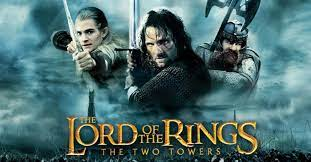

Hasan Kürşad KORKMAZ
Hakkımda
Kod yazmaktan ve bilgisayar oyunlarından hoşlanırım
İlgi Alanlarım
- Film
- Dizi
- Kitalar
- Epic
- The Silmarillion
- The Dark Tower Series
Sevdiğim Filmler
The Lord of the Rings: The Two Towers

Yüzüklerin Efendisi: İki Kule, J. R. R. Tolkien'nin İki Kule adlı kitabından uyarlanmış ve Peter Jackson tarafından yönetilmiş 2002 yılında gösterime giren fantezi filmidir.